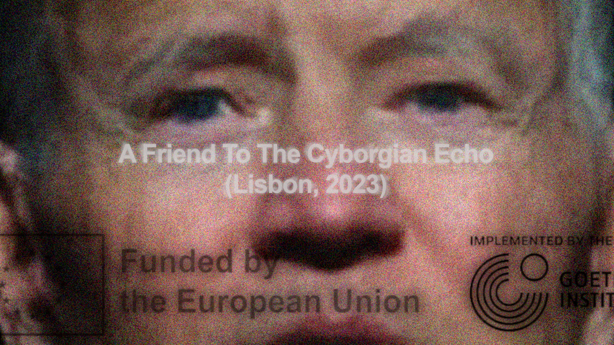
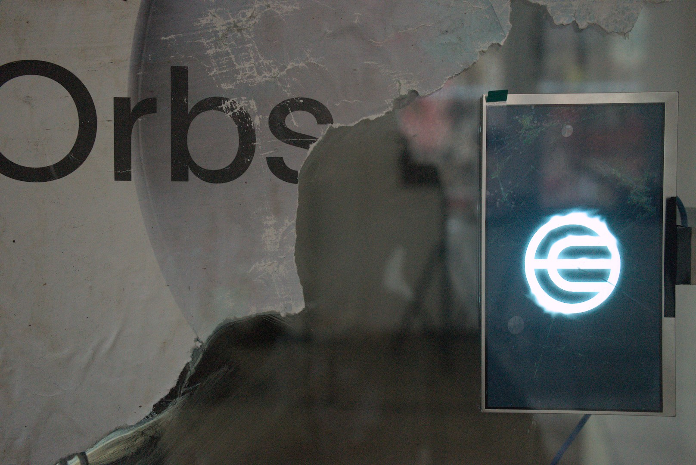

A Friend To The Cyborgian Echo is an ongoing research project and interactive installation which investigates the structural violence of AI,
hidden in SafeTensor files. Our novel approach transforms AI parameters into an immersive soundscape, resonating
sound and data through found objects and materials. Our objective is to invite the city it is located within into a
nuanced relationship with AI and the echo of its material reality. We aim to bring a critical dimension to the obscured practice of AI
through an understanding of the Cyborgian Echo - a theory which does not attempt to purify but draws knowledge
from the interwoven nature of sound’s techno-cultural qualities.
The installation is built as a diorama of found archeological objects from past/present/futures imaginaries. Each object is equipped with a
series of transducers to sonify and resonate the object, essentially turning it into a speaker whose sound is determined by it's materiality and design.
For each object an instrument is built within Ableton Live based on the research of the resonances and dynamics of the object. The center of the
installation contains a station with USB sticks and USB ports; each USB contains a SafeTensor file, and each USB port is linked directly to a specific object
in the space. When a USB stick is inserted, the file is decoded into sound information which is then played through the resonating object. Resulting
in a playground of sound, where each USB stick will give different resulting sonic qualities; from silence and calm, to cacophonous, to harmonic,
to dissonant, and between. This immersive space plays with objecive notions of what consistutes quality or 'good' sound instead recognising noise as a
form in which knowledge production can be produces thorugh the qualities and materiality of sound and the ways in which we listen.
The intention behind the installation is to allow for a dynamic setup which functions within its installation form, but also can be adapted to
music performances and be used as a surround setup.
This project is created, lived, and continues in close collaboration with my incredible friend Niels Gercama.
Click on each edition below to find out more.

A Friend To The Cyborgian Echo
Audiovisual Installation
Shown at Treehouse NDSM in Amsterdam, Netherlands
5-7 April, 2024.
This project was funded by the Amsterdams Fonds Voor De Kunst.
The resonating objects found and created were a large satellite, a scooter, two dog/reindeer/deer hybrids with a dog cage, a car chair, a large flight carousel
with numerous destroyed harddrives from the NEMO science museum, an old carousel.
We also collaborated with Infinia and used their state of the art multi-project immersive installation container.
This was the location for our film which gave a personal and intimate showcase of our intentions with the project, how we came to create it, and how we understand
it in the context of the world around us. Pulling from our algorithmic doom-scrolling, our love for pop culture references, and musical obsessions. It can be viewed
at the end of this section.
The 6th of April was an expanded evening which contained performances from many incredible local artists who engaged with the themes of the installation
and used the surround system speaker setup.
🤍 Factory Girl
🤍 QAQ & Pala.G
🤍 NEFO
🤍 Sing the Body Electronic
🤍 Jrake & 3k Madrid



A Friend To The Cyborgian Echo
Audiovisual Installation
Shown at Prisma Estudio in Lisbon, Portugal
18 - 26 Sep, 2023.
The installation was held at the Prisma Estúdio Lisboa gallery in Portugal from the 18th to the 26th of September 2023.
A Friend To The Cyborgian Echo is an interactive installation which investigates the structural violence of AI,
hidden in SafeTensor files. Our novel approach transforms AI parameters into an immersive soundscape, resonating
sound and data through found objects and materials. Our objective is to invite the city it is located within into a nuanced relationship
with AI and the echo of its material reality. We aim to bring a critical dimension to the obscured practice of AI
through an understanding of the Cyborgian Echo - a theory which does not attempt to purify but draws knowledge
from the interwoven nature of sound’s techno-cultural qualities.
The week of the exhibition also contained an extensive schedule of different events and activities which engaged with the
installation. These were live music performances from local artists and DJ’s, a jam session, and movie screenings.
The informational video shown at the installation can be viewed from this link.
This project was funded by the Culture Moves Europe Grant (the European Union & the Goethe Institute).

But what does it mean?
What is a SafeTensor file? An AI model exists in two parts: its architecture which determines the flow of information and its trained
parameters, which encode the learned representations of the input data. The trained parameters and basic
information about the model architecture are stored and shared as SafeTensors. But this is not the only thing
encoded in these seemingly harmless files. The process of training an AI model is far from a purely theoretical
or mathematical happenstance, although it may look that way. Training a model is rooted in a deeply material,
laboured reality. From data tagging camps in Nigeria, privacy infringement and illicit surveillance to the bare
extraction of raw materials, proxy conflicts over mining rights … - SafeTensors contain a hidden knowledge beyond
the data they were trained to represent. We recognise that between the data contained within the file is the violence
and blood of those that were exploited; being treated as simply ‘means to and end’, revealing how a technology which
is claimed to potentially save and bring humanity to a new frontier is built on injustice. An echo of exploitation
resonates within these files - how can we expose this echo?
Sound researcher Annie Goh proposed the cyborgian echo as a theory dealing with technologically intertwined problems.
In her writing she reflects on the relatively new field of archaeoacoustics, which aims to understand the relationship
between people and sound throughout history. As an example, she notes how researchers have found that many cave paintings
in America seem to have been painted at positions where the most resonance, echo, and reverb is created if one were to
make a sound. Due to this correlation it brings up historical questions about these sonic qualities. To choose this location
for the painting implies the hearing of this sonic attunement, it implies that whoever drew this painting recognised an
importance of this space. Goh recognises that the echo in this case contains a god-like quality, beyond full cognitive
understanding but very much bodily recognised. This conception clashes with dominant Western philosophies of sound, which
conversely tries to isolate and purify sound. The echo has become an undesirable quality of sound in physical space.
By embodying the echo as a quality, what can listening and sound teach us about the world that we could not previously
understand? The echo in fact has a cyborgian quality, an intertwined and nuanced identity. Annie Goh says there are more
companions to the echo to be discovered. This project is such a companion.
//////////